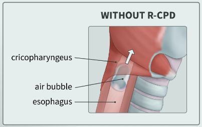
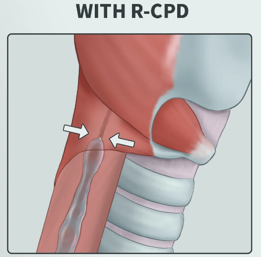

Frequently Asked Questions
RCPD stands for Retrograde Cricopharyngeal Dysfunction. It’s a condition where the cricopharyngeus muscle in the throat fails to relax properly, preventing a natural burp. This can result in chronic bloating, discomfort, and gurgling noises as trapped air cannot escape.


Note: Images illustrated by natalie_uic (u/natalie_uic).
Typical symptoms include:
- Inability to burp or extreme difficulty burping
- Frequent gurgling, rumbling, or squeaking noises in the throat or upper chest
- Bloating, chest pressure, or discomfort after meals or carbonated drinks
- Excessive flatulence
- Occasional relief through passing gas, air-vomiting, or lying down
- Social or dietary adjustments to avoid triggers like carbonated beverages
RCPD is not considered life-threatening; however, it can significantly impact quality of life. Chronic discomfort, anxiety, and the need to adopt lifestyle changes are common. In some cases, ongoing strain may lead to secondary issues, so professional evaluation is recommended if symptoms persist.
- Botox Injection: Helps relax the cricopharyngeus muscle so trapped air can escape.
- Physical/Swallow Therapy: Targeted exercises guided by a specialist. For example, "shaker" exercises.
- Lifestyle & Diet Modifications: Adjusting food and drink habits to reduce gas production.
For RCPD, a Botox (botulinum toxin) injection is used to relax the cricopharyngeal muscle in the upper esophageal sphincter (UES). This muscle is normally supposed to relax to allow gas to escape from the stomach through burping, but in people with RCPD, it remains overly tight, preventing burping and leading to symptoms like bloating, discomfort, and gurgling noises as trapped air cannot escape.
Note: Images illustrated by natalie_uic (u/natalie_uic).
If you suspect you have RCPD, consider taking the following steps:
- Document your symptoms including triggers and frequency.
- Consult a specialist such as an ENT (an otolaryngologist, also known as an Ear, Nose, and Throat doctor).
- Discuss treatment options, as early intervention may help manage symptoms.
Air-vomiting, sometimes called “air-puking,” is the forced expulsion of trapped air from the stomach or esophagus. It mimics vomiting without expelling any solid or liquid contents and is sometimes used by individuals with RCPD to relieve discomfort.
Emetophobia is an intense fear of vomiting, seeing vomit, or feeling nauseous. It can cause anxiety, avoidance behaviors, and impact daily life. RCPD can trigger or worsen emetophobia since the trapped gas can cause sensations similar to nausea, increasing anxiety about vomiting.
An ENT (Ear, Nose, and Throat) doctor, also known as an otolaryngologist, is a medical specialist who diagnoses and treats conditions related to the ears, nose, throat, and related structures of the head and neck. A laryngologist, a specialized ENT focused on swallowing disorders, is the primary specialist for treating RCPD.